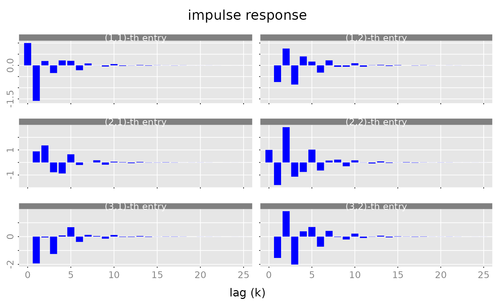
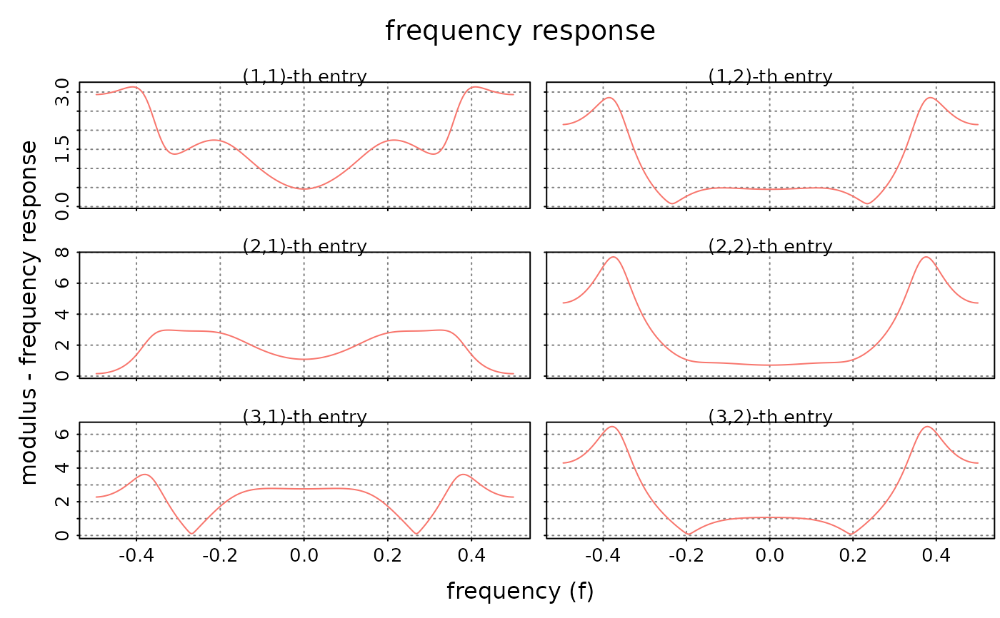
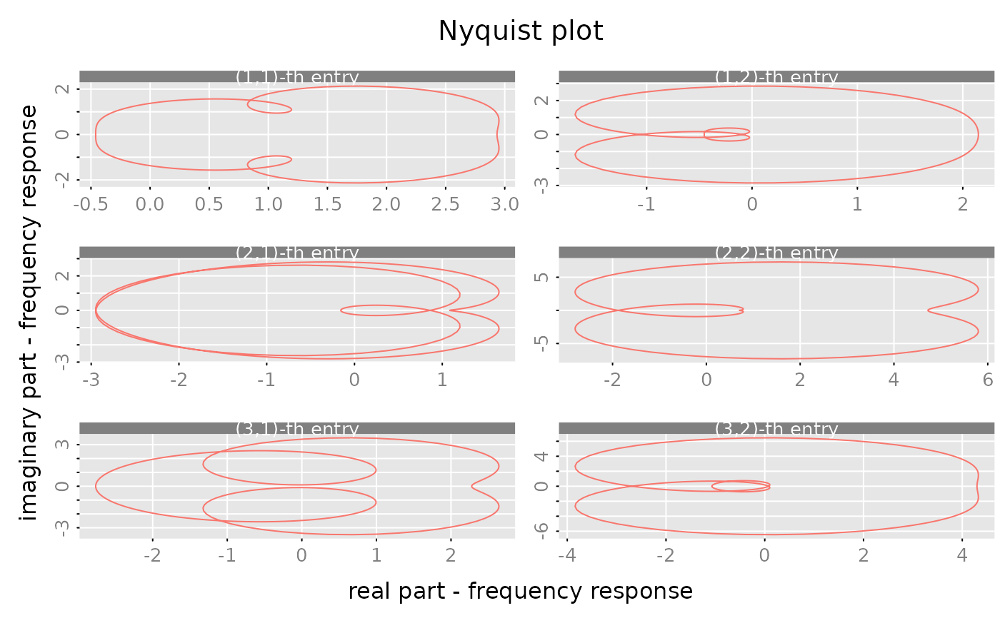
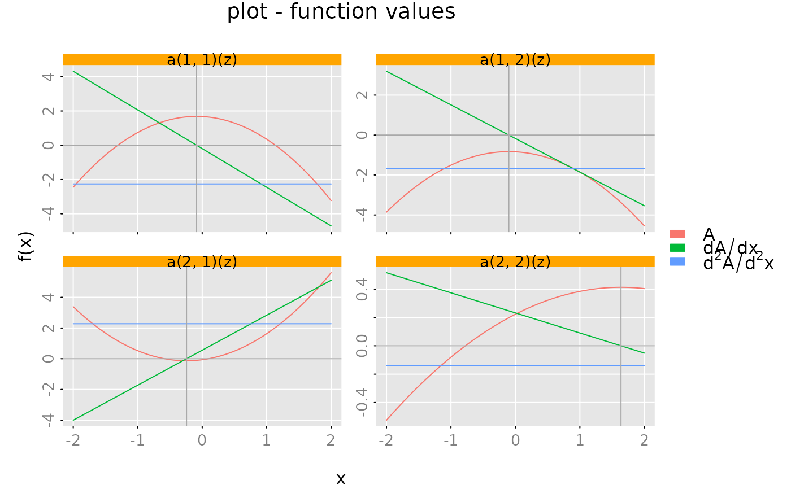

Plot Methods
plot.RdPlot impulse and frequency response functions.
Usage
# S3 method for class 'pseries'
plot(
x,
x_list = NULL,
xlim = c("global", "column", "subfig"),
ylim = c("row", "subfig", "global"),
main = "impulse response",
xlab = "lag (k)",
ylab = NULL,
subfigure_main = NA,
parse_subfigure_main = FALSE,
style = c("gray", "bw", "bw2", "colored"),
col = NA,
type = "l",
lty = "solid",
lwd = 1,
pch = 16,
cex.points = 1,
bg.points = "black",
legend = NULL,
legend_args = NA,
...
)
# S3 method for class 'zvalues'
plot(
x,
x_list = NULL,
style = c("gray", "bw", "colored"),
which = c("modulus", "phase", "nyquist", "real"),
subfigure_main = NA,
xlim = NA,
ylim = NA,
main = NA,
ylab = NA,
xlab = NA,
legend = NULL,
legend_args = NA,
col = NA,
type = "l",
lty = "solid",
lwd = 1,
pch = 16,
cex.points = 1,
bg.points = "black",
...
)Arguments
- x
- x_list
(optional) list of additional
pseriesorzvaluesobjects.- xlim, ylim
determine the axis limits of the subfigures. E.g.
xlim = 'column'means that all subfigures in a column use the same x-axis limits. The parameterxlimmay also contain a 2-dimensional vectorc(x1,x2). In this case all sub-figures use the given limits for the x-axis. Furthermore the limits for the y-axis are computed based on the corresponding data "subset".- main
(character or
expression) main title of the plot- xlab
(character string or
expression) label for the x-axis- ylab
(character or
expression) label for the y-axis- subfigure_main
scalar or
(m x n)matrix of type "character" with the titles for the subfigures. If subfigure_main is a scalar character string then the procedures creates a matrix of respective titles by replacing the "place holders" 'i_' and 'j_' with the respective row and column number.- parse_subfigure_main
boolean. If
TRUEthen the titles for the subfigures are parsed toexpressionbefore plotting. See alsoplotmathon the usage of expressions for plot annotations.- style
(character string) determines the appearance of the plot (background color of the plot regions, color and line style of the grid lines, axis color, ...) See also
style_parameters.- col
vector of line colors
- type
vector of plot types. The following values are possible: "p" for points, "l" for lines, "b" for both points and lines, "c" for empty points joined by lines, "o" for overplotted points and lines, "s" and "S" for stair steps and "h" for histogram-like vertical lines.
'n'suppresses plotting.- lty
vector of line types. Line types can either be specified as integers (0=blank, 1=solid (default), 2=dashed, 3=dotted, 4=dotdash, 5=longdash, 6=twodash) or as one of the character strings "blank", "solid", "dashed", "dotted", "dotdash", "longdash", or "twodash", where "blank" uses ‘invisible lines’ (i.e., does not draw them).
- lwd
vector of line widths.
- pch
vector of plotting character or symbols. See
pointsfor possible values.- cex.points
vector of scales for the plotting symbols.
- bg.points
vector of fill color for the open plot symbols.
- legend
(character or
expressionvector). IfNULLthen no legend is produced.- legend_args
(optional) list with parameters for the legend. A legend title can be included with
legend_args = list(title = my_legend_title). Note that the slotsx,yare ignored and the legend is always put at the right hand side of the plot. See alsolegend.- ...
not used.
- which
(character string) what to plot (only used for
zvaluesobjects). See details.
Value
The plot methods return (invisibly) a function, subfig say, which may be used to
add additional graphic elements to the subfigures. The call opar = subfig(i,j)
creates a new (sub) plot at the (i,j)-the position with suitable margins and
axis limits. See the examples below.
Details
The parameter which determines what to plot in the case of zvalues objects.
- modulus
plot the moduli
abs(x[i,j])versus frequencies-Arg(z)/(2*pi).- phase
plot the arguments
Arg(x[i,j])versus frequencies-Arg(z)/(2*pi).- nyquist
plot the imaginary part
Im(x[i,j])versus the real partRe(x[i,j]).- real
plot the real part
Re(x[i,j])versus the real partRe(z).
The choices which = 'modulus', which = 'phase' and which = 'nyquist'
are typically used for the case, where the rational matrix is evaluated on a (regular) grid
of points on the unit circle ($|z|=1$). The choice which = 'real' is of course designed
for the case that the z's are real numbers.
NA values for the (optional) parameters mean that the methods use some suitable default values.
(For the frequency response plots, e.g. the labels for the x- and y-axis are chosen according to the
parameter which.)
NUll values for the (optional) parameters mean that the respective graphic element is omitted.
E.g. subfigure_main=NULL skips the titles for the subfigures.
The titles for the (m,n) subfigures are determined by the parameter subfigure_main.
One may pass an \((m,n)\) matrix of character strings to the procedure. Alternatively one may also
provide an expression vector with a dim attribute such that subfigure_main[i,j]
returns the expression which is to be used as title for the \((i,j)\)-th subfigure.
E.g. for a $(2,2)$ rational matrix one might use
subfigure_main = expression(Alpha, Beta, Gamma, Delta)
dim(subfigure_main) = c(2,2)If subfigure_main is a scalar (character string or expression) then the procedures creates
the respective titles by replacing the "place holders" i_ and j_ with the
respective row and column number. See the examples below.
The parameter xlim determines the x-axis of the subfigures.
If xlim='subfigure' then each subfigure gets its
own x-axis (with different limits). For the case xlim='column' the subfigues in
each column share a common x-axis (with common limits). The case xlim = 'global'
means that all subfigures have the (x-) limits and the x-axis is only displayed
for the subfigures in the last row. The parameter ylim is handled analogously.
If more than one object is plotted (if the optional parameter x_list is not empty)
then a suitable legend may be added with the parameters legend, legend_args.
Suppose that \(k\) objects are plotted, then legend should be a
character (or expression) vector of length k.
The "style" parameters col, type, ..., bg.points determine the appearance of the
"lines" for each of the k objects. (If necessary the values are "recycled".)
These plot methods use the internal helper function plot_3D.
Examples
# Example for PSERIES ####################
# Generate a random, stable rational matrix a(z) in state space form (m = 3, n = 2, s = 4).
a = test_stsp(dim = c(3,2), s = 4, bpoles = 1)
# Generate a power series from this state space system
x = pseries(a, lag.max = 25)
# create 'barplot'-like plot of the impulse response
# the parameter 'lwd' has to be chosen accordingly
# to the plot size and the number of lags!
par(lend = 'butt') # line end style: butt line caps
plot(x, type = 'h', lwd = 10, col = 'blue')

par(lend = 'round') # reset line end style to the default: rounded line caps
# Example for different plot types involving ZVALUES ####################
x = zvalues(a, n.f = 256)
plot(x, style = 'bw')

plot(x, which = 'phase')
plot(x, which = 'nyquist')

# Example for ZVALUES ####################
# Create a random polynomial matrix (2,2)
a = test_polm(dim = c(2,2), degree = 2, random = TRUE)
# grid of x-values
x = seq(from = -2, to = 2, length.out = 101)
subfig = plot(zvalues(a, z = x),
x_list = list(zvalues(derivative(a), z = x),
zvalues(derivative(derivative(a)), z = x)),
style = 'colored',
which = 'real',
ylim = 'subfig',
legend = c(expression(A), expression(dA/dx), expression(d^2*A/d^2*x)),
subfigure_main = "a(i_, j_)(z)")
# Add horizontal/vertical lines
opar = subfig(1,1) # save graphic parameters
da = derivative(a)
for (i in (1:2)) {
for (j in (1:2)) {
subfig(i,j)
graphics::abline(h = 0, col = 'darkgray')
graphics::abline(v = polyroot(unclass(da[i,j])), col = 'darkgray')
}}

graphics::par(opar) # reset graphic parameters